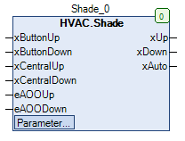

Shade (FB)¶
FUNCTION_BLOCK Shade
Short Description¶
Control of a Venetian shade drive with open/close commands and central controlAdditional functions: Slat adjustment/central control/comfort functionsTypical application: Control of a standard Venetian shade drive
Portrayal¶

Interfaces¶
Inputs¶
Name Datatype
Range
Init-Value
Functional Description
xButtonUp BOOL Requirement - Venetian shade opening via button
xButtonDown BOOL Requirement - Venetian shade closing via button
xCentralUp BOOL Requirement - Venetian shade opening via central control
xCentralDown BOOL Requirement - Venetian shade closing via central control
eAOOUp HVACTYPES.eManBin HVACTYPES.eManBin.Auto, HVACTYPES.eManBin.ManOff, HVACTYPES.eManBin.ManOn HVACTYPES.eManBin.Auto Operating mode of manual override - Hardware for opening the shades
eAOODown HVACTYPES.eManBin HVACTYPES.eManBin.Auto, HVACTYPES.eManBin.ManOff, HVACTYPES.eManBin.ManOn HVACTYPES.eManBin.Auto Operating mode of manual override - Hardware for shade closing
Outputs¶
Name Datatype
Range
Init-Value
Functional Description
xUp BOOL Release - Venetian shade opening
xDown BOOL Release - Venetian shade closing
xAuto BOOL Collective message of Automatic operation
Setpoints / Parameters¶
Name Datatype
Range
Init-Value
Functional Description
tFullMovement TIME T#30s Duration of full opening/closing
tPulse TIME T#600ms Duration of the pulse for the slat adjustment
tButton TIME T#900ms Time period for distinguishing between slat adjustment/complete opening/closing
tWaitReverse TIME T#2s Waiting period for switching between opening and closing
eManModeUp eMANBIN eMANBIN.Auto, eMANBIN.ManOff, eMANBIN.ManOn eMANBIN.Auto Operating mode of manual override - Shade opening
eManModeDown eMANBIN eMANBIN.Auto, eMANBIN.ManOff, eMANBIN.ManOn eMANBIN.Auto Operating mode of the manual override - Shade closure
Functional Description¶
General¶
Central control¶
Waiting period of switching between opening and closing tWaitReverse¶
Slat adjustment¶
Full opening/closing¶
Collective message automatic mode xAuto¶
Visualization¶
Codesys¶
- InOut:
Scope Name Type Initial Comment Input xButtonUp BOOL Requirement - Venetian shade opening via button
xButtonDown BOOL Requirement - Venetian shade closing via button
xCentralUp BOOL Requirement - Venetian shade opening via central control
xCentralDown BOOL Requirement - Venetian shade closing via central control
eAOOUp eManBin Operating mode of manual override - Hardware for opening the shades
eAOODown eManBin Operating mode of manual override - Hardware for shade closing
Output xUp BOOL Release - Venetian shade opening
xDown BOOL Release - Venetian shade closing
xAuto BOOL Collective message of Automatic operation
Input tFullMovement TIME TIME#30s0ms Duration of full opening/closing
tPulse TIME TIME#600ms Duration of the pulse for the slat adjustment
tButton TIME TIME#900ms Time period for distinguishing between slat adjustment/complete opening/closing
tWaitReverse TIME TIME#2s0ms Waiting period for switching between opening and closing
eManModeUp eMANBIN eMANBIN.Auto Operating mode of manual override - Shade opening
eManModeDown eMANBIN eMANBIN.Auto Operating mode of the manual override - Shade closure